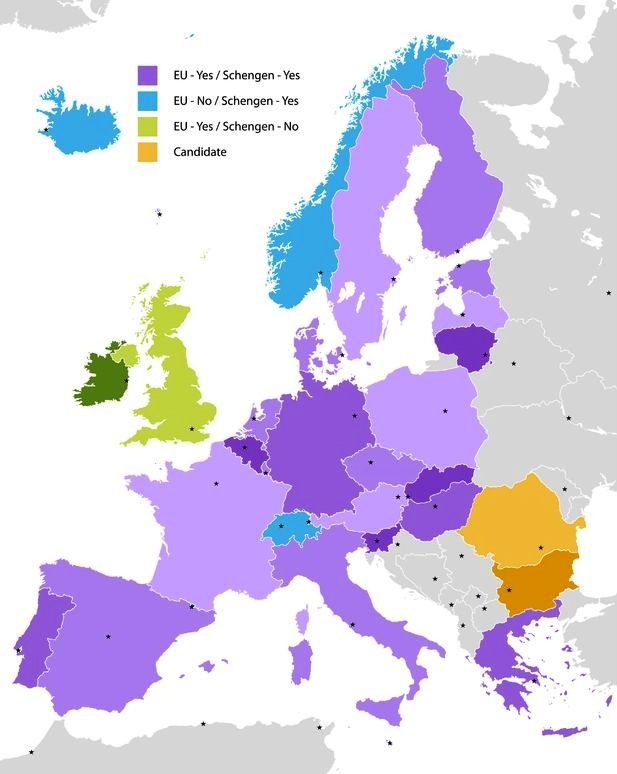

Schengen Visa Countries List
The Schengen Visa is the representative of the collective of 26 European countries that have mutually decided to eliminate passport and immigration controls at their joint borders. Within the Schengen area, concurrently, the citizens of these 26 European countries are free to travel in and out of this zone as one single country sharing equal international travel rights. The citizens of the Schengen zone countries cherish the right to migrate internationally without any limitations, the basis of free movement, one of the basic human rights.
The Schengen Area Member States:

- Austria
- Belgium
- Czech republic
- Denmark
- Estonia
- Finland
- France
- Germany
- Greece
- Hungary
- Iceland
- Italy
- Latvia
- Lithuania
- Luxembourg
- Malta
- Netherlands
- Norway
- Poland
- Portugal
- Slovakia
- Slovenia
- Spain
- Sweden
- Switzerland
- Liechtenstein
As an agreement, Schengen was signed among the five out of ten countries of the European Union members back then, on the 14th June 1985. However it was hardly possible to reach a compromise among all the members of the European member states into eliminating the border controls, therefore Schengen was established outside the European community at first. After five years of struggle, the Schengen Convention was added to the establishment proposing the abolition of internal borders and a mutual visa policy. The consensus revealed new rules entirely opposed to the ones within the EU community therefore the aftermath, the creation of the Schengen Area started from scratch on the 26th march 1995. The name came from a small village in Luxembourg, Schengen where the agreement was initially signed. As the number of countries entering the Schengen area was ever growing, with states signing up to join the Schengen area even to this day, the Agreement and the relating conventions got integrated into the European Union Law, effective immediately in 1999. The downside of the Schengen agreement and its relating conventions is that with alleviating the bureaucracy among the Schengen zone countries it consequently reinforced the external border control with the non-European countries as well as the fact that not being a part of the agreement meant not having a say in any amendment or regulation within the European Law.
Under the Schengen agreement, travelling from one Schengen country to another is done without any passport and immigration controls or any other formalities previously required. However, the Schengen Area and the European Union are two completely different zones that shall not be misinterpreted.
Schengen Area is comprised of twenty-two European Union member states as well as four European Free Trade Association member states (EFTA is an association of ten Fair Trade importers in nine European countries (Austria, Belgium, France, Germany, Italy, The Netherlands, Spain, Switzerland and the United Kingdom). EFTA was established informally in 1987 by some of the oldest and largest Fair Trade importers. It gained formal status in 1990. EFTA is based in the Netherlands and has Dutch Articles of Association.)
Member states of the EU:
- Austria (1995)
- Belgium (1952)
- Bulgaria (2007)
- Croatia (2013)
- Cyprus (2004)
- Czech Republic (2004)
- Denmark (1973)
- Estonia (2004)
- Finland (1995)
- France (1952)
- Germany (1952)
- Greece (1981)
- Hungary (2004)
- Ireland (1973)
- Italy (1952)
- Latvia (2004)
- Lithuania (2004)
- Luxembourg (1952)
- Malta (2004)
- Netherlands (1952)
- Poland (2004)
- Portugal (1986)
- Romania (2007)
- Slovakia (2004)
- Slovenia (2004)
- Spain (1986)
- Sweden (1995)
- United Kingdom (1973)
On the road to EU membership / Candidate countries
- Iceland
- Montenegro
- Serbia
- The Former Yugoslav Republic of Macedonia
- Turkey
- Albania
Potential candidates
- Bosnia and Herzegovina
- Kosovo
There are six European Union member states that are not part of the Schengen area as well as state territories that are also not part of the Schengen agreement. Out of the six Schengen nonmember states, four of them are soon joining the Schengen area as is Bulgaria, Croatia, Cyprus and Romania while the other two, Ireland and the United Kingdom remain opt-out (In general, the law of the European Union is valid in all of the twenty-eight European Union member states. However, occasionally member states negotiate certain opt-outs from legislation or treaties of the European Union, meaning they do not have to participate in certain policy areas.) Apart from the aforementioned states as a whole, there are certain territories within EU states that also not part of the Schengen area, including: French territories of French Guyana, Guadeloupe, Martinique, Réunion, Mayotte, Saint Barthélemy and Saint Martin.
On the other hand, there are four nonmembers of the EU yet members of the EFTA that are part of the Schengen Area together with the other twenty-two EU member states as follows: Liechtenstein, Norway, Switzerland and Iceland. Although they are not EU members, the citizens of these EFTA countries cherish the free movement policy irrespective of their nationality.
Although somewhere between a state and a city, these European microstates as San Marino, Monaco and the Vatican also abolished the border control and embraced the free movement among the Schengen Zone Countries, a position referred to as de facto (in practice but not necessarily ordained by law) under the Schengen Agreement.
Attention! Although most of the Schengen countries are in the European Union, you should not confuse the Schengen area with the EU.